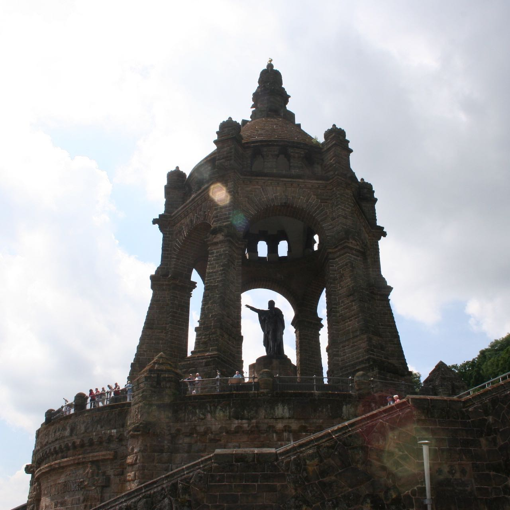

Introduction Extermination Through Labor
Sitting atop the Wittekindsberg hill in Porta Westfalica, Germany, is a massive monument to an equally massive historical figure of nineteenth-century Germany. From 1892-1896, citizens built a large bronze statue of William Frederick Louis King of Prussia, to commemorate their first emperor. The statue stands within a gazebo made from sandstone taken from the hill upon which it rests. For some citizens, this monument reminds them of Germany’s first political unification; but remnants of a more recent, and divisive German past lay all but forgotten under the monument.
Mining during the nineteenth century left large, open mines in the Wittekindsberg and Jakobsberg hills, situated on opposite banks of the Weser River from one another. Unused throughout the early twentieth century, the mines found use again in the final years of World War II. Beginning in 1942, the German government made concerted efforts to protect the increasingly targeted aircraft industry, and later oil and fuel refineries, by relocating factories to physically separate locations, and in some cases into underground spaces. Inmates from nearby concentration camps supplied the labor to convert existing mines into factories or carve new workspaces from stone. SS engineers selected the unused mines in Porta Westfalica’s hills for three large underground factory spaces, and supplied the labor force primarily with inmates from the Neuengamme Concentration Camp near Hamburg. Germans discarded the stone once used to commemorate and memorialize the unification of fragmented German kingdoms in favor of the underground space; just as they discarded the lives and humanity of concentration camp inmates for their labor.
The prevailing assumption of historians of the Holocaust and the SS use of forced labor state that forced labor camps allowed the SS to compromise between the conflicting goals of ideology and economic productivity.1 On one hand concentration camps served the goal of the Final Solution, genocide of European Jewry and other undesirables, and on the other, the inmates provided a labor force that the SS needed in order to achieve Himmler’s goal of German economic control. Some historians argue that “Vernichtung durch Arbeit” (annihilation through work) was the SS solution to both goals. The term itself implies that the underlying goal was to exterminate the laborers and that work was the means for accomplishing the goal. In this line of thinking, lethal labor and gas chambers were equivalent. Under this definition, these historians argue that the fundamental design behind all SS decisions was to kill all inmates while gaining economic influence and increasing productivity before termination.
Others argue that the labor camps were selective in their application of working inmates to death. For example, Marc Buggeln points to the fact that while some Nazi leaders used the term “Vernichtung durch Arbeit” as early as 1942 in discussions about transferring inmates from prison systems to the SS concentration camp system, the phrase is not used in internal SS correspondence.2 Buggeln further points to SS policy and the mortality rate of prisoners during certain years to show that the SS intended keep most prisoners alive and usable for their productivity, and only intended extermination of the Jewish, Sinti and Roma inmates in the labor camps. Jens-Christian Wagner, historian and director of the Mittelbau-Dora Memorial, shows that not all inmates died working in the mines and factories producing V1 and V2 weapons.
The prime question driving this dissertation is to discern how Porta Westfalica, as a case study, helps us understand how the SS treated inmates in regards to ideology and economic concerns. Do the camps at Porta Westfalica show that the SS were willing to work all inmates to death, or was the SS more selective in who they sentenced to termination through toiling in the tunnels? Do the experiences of the inmates show that work was their path towards extermination, or was death merely a by-product of labor and malnutrition and unsanitary camp conditions? Porta Westfalica provides a unique look at the question due to several factors: the creation of the camps late in the war; the SS utilized many nationalities and races (Jews, POWs, foreign laborers, forced laborers, political prisoners, asocial foreigners and Germans, and concentration camp inmates); there was a distinct camp for men and women; and the camps’ location in western Germany.
Plans for the underground production facilities at Porta Westfalica began in early 1944, when the SS and German army faced major changes and likely outcomes for the war. Looking at Porta Westfalica provides a glimpse at the late war attitude of SS officials towards concentration camp inmates, and their relationship to economic goals and implementation of Nazi ideology with regards to inmates as laborers.
Porta Westfalica was a melting pot of nationalities and prisoner types. Russian, French, Dutch, Polish, German, Jews, political prisoners, asocials and more were all forced to labor in the tunnels. While hierarchical organization existed among the prisoners, they were all abused for their labor. Aryan inmates had a higher death rate, arguing that the SS did not treat some prisoners better, but not necessarily that “Vernichtung durch Arbeit” applied to all inmates either. Chapters three and four will show that the main focus for the SS were production goals, and ideology and economic goals played only a background part.
A separate camp for men and women allow us to look at how the SS treated inmates differently by gender. Buggeln concluded that Jewish men were most likely to die in labor camps, and that women, regardless of the ethnicity, were more likely to live. Porta Westfalica provides a clear look at this thesis.
After the war, many Germans associated the Holocaust with extermination camps in the East. Porta Westfalica’s location shows that intentional annihilation occurred much farther west than many remembered, and stands as an example that the Holocaust happened all throughout Germany and occupied territories.
Methodologically, this dissertation takes a unique perspective in that I favor the reports and testimonies of the inmates over official government documentation. Most histories of forced labor and labor camps utilize official Nazi records to provide a top-down history of the policies and actions of the camps. This research relies mainly on survivor testimonies to create a history from the bottom up, putting the victims in the narrative driver’s seat. The main reason for this methodological decision is due to the scarce records from SS officials. As was policy when fleeing the Allied army, the SS officials destroyed all records before abandoning the camp.
Where some historians argue how selectively the Nazi leadership applied the policy of “Vernichtung durch Arbeit” to labor camps, this dissertation presents a third hybrid. The camps at Porta Westfalica show that the SS were mainly interested in armaments production and less interested in who was doing the labor or what happened to the workers. Survivor accounts show a lack of interest in the inmates and a focus on completing the projects in order to increase armaments production. The mix of nationalities among the male inmates shows that the SS did not care who was doing the labor, they just wanted it done. The high death rate, terrible living conditions, and poor (non-existent) nutrition shows the SS did not care for the wellbeing of the inmates, whether Aryan, Jew, Soviet, French or other. I argue that at this point in the war, and because of the circumstances they were in, the SS were only interested in armaments productivity. SS ideology and economic goals changed and fluctuated in importance throughout the war, and this account of Porta Westfalica will show that during the last months of the war, the SS entered a phase of decision making driven by circumstances and a need to survive. Ideology played a minor role in decisions at Porta Westfalica as the SS drove all prisoners, regardless of race, to exhaustion and death in order to produce materials desperately needed for the war.
Chapter Summaries
Chapter one provides context for the Porta labor camps and underground projects through a general summary of the changing purpose of concentration camps throughout World War II, the importance for the SS to control the labor force for their economic and military goals, and the contention between their ideology and their pragmatic need to get things done. Chapter two includes a detailed description of the technical aspects of the underground projects at Porta Westfalica, and puts this project into context with other such projects conducted throughout Germany and occupied territories. Chapter three relates the experiences of male inmates showing their integral role in the construction of the underground space and assembly of machinery, yet the SS treated the men as expendable tools, easily replaced if broken. This section also highlights the racial, ethnical, and national divisions that existed in the camp. Chapter four relates the experiences of women inmates, most of whom were Jewish, to show how they escaped the gas chambers of extermination camps because of their technical skill and economic value as laborers. The brutal treatment of women inmates during forced marches to Porta Westfalica and to other camps, and the mass execution of many women as the Allies approached in April 1945 underscore the SS desire to harness the labor of the women, but reveals the underlying ideology that these lives were completely disposable. Chapter five relates the liberation of the camps by British and American forces and touches on the post-war history of Porta Westfalica, briefly discussing the way in which the local citizens in the present have dealt with the past. Finally, a concluding chapter summaries the findings and presents further research ideas that were not examined fully in this research project.
See Michael Thad Allen, The Business of Genocide: The SS, Slave Labor, and the Concentration Camps (Chapel Hill, N.C: University of North Carolina Press, 2002), Marc Buggeln, Slave Labor in Nazi Concentration Camps, trans. Paul Cohen (Oxford University Press, 2015), Jane Caplan and Nikolaus Wachsmann, Concentration Camps in Nazi Germany: The New Histories (London; New York, NY: Routledge, 2010), Center for Advanced Holocaust Studies, Forced and Slave Labor in Nazi-Dominated Europe: Symposium Presentations (Washington, D.C: Center for Advanced Holocaust Studies, United States Holocaust Memorial Museum, 2004), Enno Georg, Die Wirtschaftlichen Unternehmungen Der SS (Stuttgart: Deutsche Verlags-Anstalt, 1963), Wolf Gruner, Jewish Forced Labor Under the Nazis: Economic Needs and Racial Aims, 1938-1944, trans. Kathleen Dell’Orto (New York: Cambridge University Press, 2006), Ulrich Herbert, Geschichte der Ausländerpolitik in Deutschland: Saisonarbeiter, Zwangsarbeiter, Gastarbeiter, Flüchtlinge (München: Beck, 2001), Paul Jaskot, The Architecture of Oppression: The SS, Forced Labor and the Nazi Monumental Building Economy (London; New York: Routledge, 2000), Mark Spoerer, Zwangsarbeit unter dem Hakenkreuz: ausländische Zivilarbeiter, Kriegsgefangene und Häftlinge im Deutschen Reich und im besetzten Europa 1939-1945 (Stuttgart: Deutsche Verlags-Anstalt, 2001), Nikolaus Wachsmann, KL: A History of the Nazi Concentration Camps, 2015.↩
Buggeln, Slave Labor in Nazi Concentration Camps, 63.↩
Last edited on 18 Aug 2016